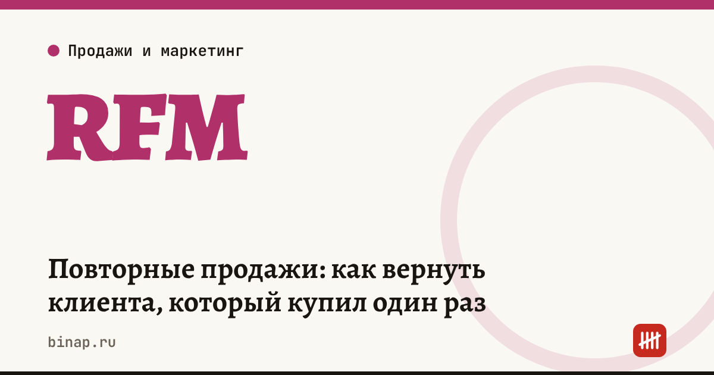

Повторные продажи: как вернуть клиента, который купил один раз

Вернуть клиента, который уже покупал, обычно проще, чем найти нового: он знает вас и ваш товар. Чтобы понять, кого возвращать в первую очередь, разделите базу по давности последней покупки, частоте и сумме — это RFM-анализ. Его можно сделать в обычной таблице за вечер.
Коротко
- RFM — три оценки клиента: давность последней покупки (Recency), частота покупок (Frequency), сумма (Monetary).
- По каждой оценке клиентов делят на 3 группы. Три параметра дают 27 сегментов, два — 9; для малого бизнеса удобнее 9.
- Самые ценные для возврата — те, кто покупал часто, но давно не приходил.
- Пересчитывайте сегменты раз в 3–6 месяцев.
- Метод не подходит, если вы продаёте один продукт один раз — например, ремонт квартиры.
Сроки, изменения и разборы для ИП и самозанятых — каждое утро в Telegram и MAX. Подпишитесь, чтобы не пропустить.
Как сделать в таблице
- Выгрузите покупки за 12 месяцев: клиент, дата, сумма.
- Для каждого клиента посчитайте: дней с последней покупки, число покупок, общую сумму.
- Разбейте каждую колонку на 3 группы: 1 — лучше всего, 3 — хуже всего. Например, по давности: до 30 дней, 31–90 дней, больше 90 дней.
- Сложите оценки давности и частоты — получится 9 сегментов.
Что делать с сегментами
| Давность \ Частота | Часто | Иногда | Один раз |
|---|---|---|---|
| Недавно | лучшие: программа лояльности, не мешайте скидками | растут: предложите сопутствующий товар | новички: инструкция, отзыв, второй заказ |
| Давно (31–90 дней) | под угрозой: личное сообщение | напомнить о себе | вторая попытка: полезный контент |
| Очень давно (90+) | спящие ценные: звонок, опрос, персональное предложение | реактивация массовой рассылкой | не тратьте бюджет |
Главный сегмент для возврата — «часто, но очень давно». Они уже доказали, что ценят вас, и что-то пошло не так: переехали, нашли другого продавца, были недовольны. Узнайте причину — это само по себе ценно.
Как посчитать эффект
Пример (расчёт редакции, цифры условные). В сегменте «спящие ценные» 120 клиентов, средний чек — 4 000 ₽, маржинальный доход — 40% от чека.
| Показатель | Значение |
|---|---|
| Вернулось после звонка и предложения, 10% | 12 клиентов |
| Выручка с первой повторной покупки | 12 × 4 000 = 48 000 ₽ |
| Маржинальный доход | 19 200 ₽ |
| Затраты: скидка 10% и время менеджера | 4 800 + 6 000 = 10 800 ₽ |
| Результат с первой покупки | 8 400 ₽ |
Если вернувшиеся купят ещё 2–3 раза за год, эффект растёт без новых затрат на привлечение. Как считать стоимость клиента и его ценность за всё время — CAC, LTV и ROMI.
Вести клиентов, сегменты и напоминания в одном месте: ссылка
Что написать спящему клиенту
- Обратитесь по имени и напомните, что он покупал.
- Спросите, всё ли было хорошо, — коротко, одним вопросом.
- Предложите повторить прошлую покупку или новинку по его интересам.
- Ограничьте предложение сроком, но не давите.
Скорость ответа решает и при возврате — клиентов теряют на первом ответе. Где теряются клиенты по пути к покупке — воронка продаж.
Частые вопросы
Сколько клиентов нужно для RFM? Метод полезен от нескольких десятков клиентов с повторными покупками. Если база меньше, просто обзвоните всех, кто давно не покупал.
Как часто пересчитывать сегменты? Раз в 3–6 месяцев для небольшого бизнеса; чаще — если покупки частые, например в кафе или салоне.
Нужна ли CRM? Для первого анализа хватит таблицы. CRM удобна, когда нужно регулярно напоминать клиентам и видеть историю покупок.